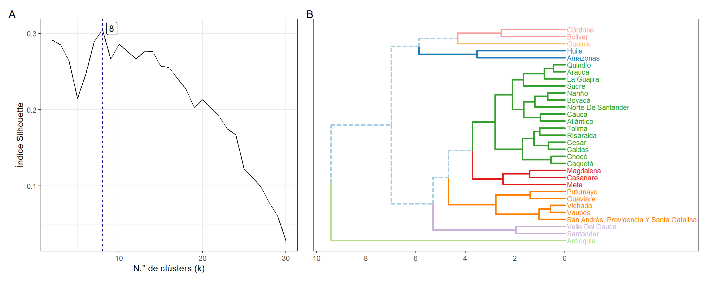

4.5 Propuesta de clasificación de los FRE
Durante el desarrollo de las visitas técnicas a los territorios, se observaron importantes diferencias entre los FRE departamentales. Estas diferencias se podrían explicar por factores administrativos, organizativos y socio-demográficos que se presentan en cada departamento. Debido a esto puede que los FRE tengan un desarrollo de sus actividades en determinada forma, lo cual resulta en un grado de eficiencia definido para cada ente territorial, en cuanto al manejo de MME, recetarios, o informes en la región.
Por lo tanto, se propuso una clasificación de los FRE de acuerdo con variables relacionadas al nivel de complejidad y varios indicadores de gestión - con el fin de mejorar el direccionamiento de acciones o asistencia a los FRE - sin el ánimo de generar acciones prohibitivas o represivas. El objetivo fue generar grupos de FRE que permitieran establecer las capacidades actuales así como las similaridades o diferencias entre los departamentos. Todo esto con el fin de generar un instrumento que sirviera como insumo para mejorar el acompañamiento a los FRE en las asistencias técnicas y toma de decisiones relacionadas con el manejo de MME en los FRE.
4.5.1 Variables
A continuación, se listan las variables definidas para la clasificación de los FRE y se presenta una breve descripción de las mismas.
4.5.1.1 Variables relacionadas con la complejidad
Con complejidad se hace referencia a la magnitud de las actividades que debe desarrollar un FRE en su departamento, lo cual se relaciona de manera directa con el tamaño que tiene cada uno de estos entes territoriales. A diferencia de la definición de nivel de complejidad utilizada en el Sistema General de Seguridad Social en Salud8, esta definición no hace referencia a una clasificación funcional que tenga en cuenta capacidades construidas.
Regionalización del Presupuesto General de la Nación de 20209.
Regionalización del Presupuesto General de la Nación de 2020 y su asignación al sector salud9.
Número de inscritos (instituciones) en el departamento que realizaron compras de MME al FRE, esta información se obtuvo mediante la encuesta aplicada.
Proporción de portafolio de MME adquirido de forma continua por parte del FRE, esta información se obtuvo a partir de datos de ventas del FNE a los FRE. Esta variable se refiere al número de productos adquiridos por el FRE de manera continua sobre el número de productos totales en el portafolio.
4.5.1.2 Indicadores de gestión
En este grupo se consideran indicadores de cumplimiento y de eficiencia en procesos relacionados con venta de medicamentos, envío de informes y adquisición de recetarios.
- Proporción de ventas realizadas por el FRE a instituciones en el departamento del FNE respecto a la suma de ventas de FRE y compras directas
\[P~\left(v_{\mathrm{FRE}}\right) = \frac{v_{\mathrm{FRE}} }{v_{\mathrm{FRE}} + v_{\mathrm{CD}}}\]
En donde, \(P~\left(v_{\mathrm{FRE}}\right)\) es la proporción de ventas realizadas a través del canal FRE (se entiende a las compras directas como una desviación de la cadena de suministro), \(v_{\mathrm{FRE}}\) y \(v_{\mathrm{CD}}\) son las ventas hechas por el FNE directamente a los FRE o instituciones por compra directa en el año 2021 de manera respectiva, las ventas se ingresan cómo ventas en unidades monetarias. Un valor alto en esta proporción indicaría que los FRE pueden suplir la mayor parte de la demanda que surge de los inscritos en el departamento.
- Proporción de meses con entrega del Anexo 1 de la Resolución 1479 de 2006 (cumplimiento).
\[P~\left( \mathrm{Cumpl.~A1}\right) = \frac{\sum^{N_m}_{m = 1}{1_{\mathrm{Cumpl.~A1}}}}{N_m}\]
Donde \(1_{\mathrm{Cumpl.~A1}}\) indica que se debe sumar 1 en los meses en los que se reporte un cumplimiento en la entrega del Anexo 1, \(N_m\) es el número de meses en el período a considerar, y \(m\) indica los meses. Esta información fue provista por el grupo de regionalización del FNE y el cumplimiento fue determinado para el período comprendido entre enero de 2020 y junio de 2021 (\(N_m = 18\)).
- Proporción de meses con entrega del Anexo 2 de la Resolución 1479 de 2006 (cumplimiento). \[P~\left( \mathrm{Cumpl.~A2}\right) = \frac{\sum^{N_m}_{m = 1}{1_{\mathrm{Cumpl.~A2}}}}{N_m}\]
Donde \(1_{\mathrm{Cumpl.~A2}}\) indica que se debe sumar 1 en los meses en los que se reporte un cumplimiento en la entrega del Anexo 2, \(N_m\) es el número de meses en el período a considerar, y \(m\) indica los meses. Esta información fue provista por el grupo de regionalización del FNE y el cumplimiento fue determinado para el período comprendido entre enero de 2020 y junio de 2021 (\(N_m = 18\)).
- Razón entre tiempo de adquisición de recetarios sobre existencias estimadas de recetarios en circulación en el departamento.
\[R \left(\mathrm{T_{adq}}/\mathrm{N_{recetarios}}\right ) = \left\{\begin{matrix} \frac{\mathrm{T_{adq}}}{\mathrm{N_{recetarios}}}\quad\mathrm{Si}~\mathrm{N_{recetarios}}>0 \\ 100\quad\quad\quad\mathrm{Si}~\mathrm{N_{recetarios}}=0 \end{matrix}\right. \]
Donde \(\mathrm{T_{adq}}\) es el tiempo que toma la adquisición de recetarios en días, y \(\mathrm{N_{recetarios}}\) es el número de recetarios que se tienen en circulación en el departamento de acuerdo a lo reportado por los FRE. A diferencia del resto de indicadores un valor bajo de esta razón indica que el proceso toma menos tiempo y por tal es más eficiente.
4.5.2 Análisis mediante clusterización
Se realizó un análisis de agrupación de los FRE mediante técnicas de análisis de clúster (conglomerados). Los métodos de análisis de clúster buscan crear grupos (subconjuntos) del conjunto de datos originales basados en la minimización de una función de costo o mediante modelos probabilísticos10. El análisis de clúster jerárquico fue realizado mediante el algoritmo de Ward (función hclust) en el software R11, este análisis fue comparado con el obtenido mediante un método de análisis por K-means (función kmeans). El set de datos fue preprocesado mediante estandarización (Z-score) de cada una de las variables.
El número de grupos (\(k\)) fue seleccionado mediante la comparación de varios índices de validez de clúster como: (i) Silhouette, (ii) índice de Dunn, (iii) conectividad, (iv) distancia promedio (AD), o (v) distancia promedio entre media (ADM)12. Se realizó la evaluación del número de grupos (\(k\)) de 2 a máximo 15 grupos, y se evalúo la presencia de incremento (o decrecimientos) súbitos a forma de criterio de codo en cada indicador. Se utilizó análisis por componentes principales (PCA, Principal Component Analysis) para la visualización de la separación lograda por el análisis de clúster y evidenciar la pertenencia de los departamentos a cada grupo.
En la Figura 4.11 se muestra el comportamiento de las variables definidas para el análisis mediante un círculo de correlación. En primer lugar se observó que los primeros dos componentes de PCA representan un 56.9% de la variabilidad del conjunto de datos. Se observó que las variables relacionadas a la complejidad contaban con una correlación alta entre sí, p.ej. los departamentos con mayores presupuestos asignados tenían una mayor proporción de uso del portafolio, así como una mayor proporción de inscritos activos.
Figura 4.11: Círculo de correlación de variables aplicadas en la definición de componentes principales

Así mismo, se observó que los indicadores de gestión no presentaron una correlación importante con las variables de complejidad (se evidenció porque las variables se proyectaron de forma perpendicular), las variables de cumplimiento de envío de informe parecían tener una correlación un poco más alta respecto al resto de indicadores. Las variables de proporción de ventas realizadas por el FRE y cumplimiento de envío de Anexo 1 tuvieron una correlación negativa con el indicador de tiempo de adquisición de recetario (esto era esperado por la definición de la variable) así como con el cumplimiento de envío de Anexo 2.
Los resultados del análisis mediante el algoritmo K-means y Ward fueron similares en cuanto al número de clústers óptimo y agrupación de individuos. Una gran parte de los índices de validez de clústers presentaron un aumento o disminución monotónica respecto al valor de \(k\), sin embargo la mayoría de los índices mostraron cambios abruptos con \(k=8\), por lo cual se asume que este es el valor óptimo de clústers. En el panel izquierdo de la Figura 4.12 se observa el comportamiento del índice Silhouette con respecto al número de clústers en el análisis se tiene que a partir de \(k=8\) se presenta un decrecimiento en el valor del índice.
En el panel derecho de la Figura 4.12 se observa un dendrograma con la clasificación de los FRE de acuerdo a su similaridad en las características exploradas. Se tiene que el departamento de Antioquia es el que presenta la mayor diferencia con el resto de los departamentos, mientras que los departamentos de Valle del Cauca y Santander presentan unas condiciones similares.
Figura 4.12: Resultados de análisis por clúster jerárquico. (A) Índice Silhouette vs N.° de clústers. (B) Dendrograma de departamentos de acuerdo a análisis de similaridad, se muestran los grupos para k = 8.
Por otra parte, en la Figura 4.13 se muestra la clasificación de los FRE en los grupos así como la proyección de los departamentos en los primeros componentes principales.
Figura 4.13: Clasificación de los FRE en grupos de acuerdo a análisis por clúster
A continuación, se describen algunas características de los grupos encontrados:
Grupo 1: compuesto por Huila y Amazonas estos FRE cuentan con una complejidad mediana (promedio 91 inscritos), con una proporción de uso del portafolio de ~88.7% y un cumplimiento bajo en la entrega de anexos sobre todo en el Anexo 1 (75%).
Grupo 2: sólo cuenta con el departamento de Antioquia que es el FRE con la complejidad más alta (p.ej. tiene 1054 inscritos a activos) y con valores óptimos en los indicadores de gestión.
Grupo 3: este grupo cuenta con 15 departamentos entre ellos se encuentra Atlántico, Nariño y Caquetá. Este grupo contiene a FREs de mediana a alta complejidad, con un promedio de 150 inscritos y una proporción de uso de portafolio del 92%. Los indicadores de gestión parecen tener valores óptimos, sin embargo cuentan con un cumplimiento moderado en la entrega del Anexo 2 con un promedio de 0.55.
Grupo 4: este grupo consta de Córdoba y Bolívar que se comportan como FRE de complejidad mediana (promedio 91 inscritos), este grupo tiene una asignación presupuestal relativamente baja (con 16 mil millones), un promedio de 91 inscritos activos y una proporción de uso del portafolio de 0.94. Este grupo tiene un cumplimiento óptimo en la entrega del Anexo 1, con un cumplimiento moderado en el Anexo 2 (0.47), la proporción de utilización del canal FRE en las ventas es alta con 0.802. La característica más importante es que estos FRE tienen problemas por la inexistencia de recetarios en circulación a nivel departamental.
Grupo 5: este grupo cuenta con los departamentos de Meta, Casanare y Magdalena se trata de FRE con mediana complejidad con un promedio de 101 inscritos activos y una utilización del portafolio de 0.88. En cuanto a indicadores de gestión se tiene como característica principal que la proporción de ventas por el canal de FRE en comparación de compra directa es baja con un valor de 0.21, se tiene un cumplimiento moderado en la entrega de anexos.
Grupo 6: sólo cuenta con el departamento de Guainía que es un FRE de baja complejidad con un sólo inscrito activo, y una proporción baja de uso de portafolio. Se reporta un cumplimiento bajo en la proporción de ventas mediante canal FRE (0.0), una proporción de cumplimiento de Anexo 1/Anexo 2 moderada y una razón de tiempo de adquisición para recetarios alta.
Grupo 7: este grupo cuenta con FRE de baja complejidad con un promedio de 12.4 inscritos activos y una proporción de uso de portafolio baja del 0.49. Este grupo cuenta con indicadores de gestión altos con una proporción de ventas en FRE por 0.919, una proporción de cumplimiento de entrega de Anexo 1 alta, y Anexo 2 moderada, así como razones de tiempos de adquisición cortas (3.46).
Grupo 8: cuenta con Valle del Cauca y Santander que se consideran como FRE de alta complejidad en promedio 453 inscritos y un uso completo del portafolio. Estos FRE con una proporción de ventas a través de FRE de 0.871, y un cumplimiento muy bajo en la entrega del Anexo 2 (en promedio 0).
Se concluye que la agrupación de los FRE se puede realizar por factores relacionados a la magnitud de las necesidades de los inscritos en el departamento (complejidad) pero también de acuerdo a factores relacionados a indicadores de gestión, a continuación se resumen las características principales de los grupos, de acuerdo a la complejidad:
FRE de alta complejidad se tienen a los grupos 2 (Antioquia) y 8. Los FRE pertenecientes al grupo 8 (p.ej. Valle del Cauca) tienen algunos indicadores de gestión con un valor bajo, mientras que el Antioquia tiene todos los indicadores de gestión en valores óptimos.
FRE de mediana complejidad se tienen a los grupos 1, 3, 4, y 5. Los FRE en el grupo 3 (p.ej Atlántico) tienen indicadores de gestión en valores altos, mientras que el grupo 1 (p.ej Huila) cuenta con un cumplimiento bajo en la entrega del Anexo 1. El grupo 4 (p.ej Córdoba) se caracteriza por tener inexistencia de recetarios en circulación en el departamento, y el grupo 5 (p.ej Meta) tiene FRE que presentan una proporción alta de compras mediante el canal de compra directa.
FRE de baja complejidad se tienen a los grupos 6 (sólo Guainía) y 7 estos grupos tienen características de indicadores de gestión parecidas, sin embargo Guainía tiene una proporción de ventas reportadas por el FRE baja en comparación con compra directa debido a lo cual se separa en un grupo diferente.
Las variables de presupuesto y número de inscritos, reflejan la asignación de recurso económico en cada región para la partida presupuestal en temas de salud de cada territorio. Esta asignación tiene influencia en la capacidad que tienen los FRE para disponer de infraestructura tecnológica y recurso humano suficiente, para cumplir todas sus funciones como ente territorial. Adicionalmente, el número de inscritos en cada territorio refleja la complejidad entre oferta y demanda de MME en cada región, la cual debe ser satisfecha por la gestión del FRE.
La variable de proporción de adquisición de MME indica el número de MME distintos ofertados por el FRE en su territorio, relativo al tamaño de portafolio general de MME presentado por el FNE. A partir de esto, se determina de manera indirecta, la capacidad de manejo de portafolio que tiene un FRE. Esta variable se relaciona también con la carga de enfermedad, especialistas disponibles, complejidad de las instituciones prestadoras de salud en el departamento y el conocimiento a profundidad del portafolio de medicamentos que ofrece el FNE por partes de los prescriptores.
Otra variable importante en este análisis es la variable referente a la proporción de compras del FNE relativo a las compras totales provenientes del departamento (FRE más compra directa). Esta variable es un indicador de gestión administrativa importante para el FRE ya que este debería poder suplir la demanda de los inscritos en el departamento y sólo de manera excepcional estos inscritos deberían utilizar las compras directas al FNE. Un nivel bajo de este indicador podría estar causado por problemas en la proyección de compra por parte del FRE o la presentación de cuellos de botella administrativos que impidan el reabastecimiento adecuado de MME.
Las variables relacionadas con el cumplimiento de entrega del Anexo 1 y Anexo 2 de la Resolución 1479 de 20062, fueron incluidas en esta clasificación, ya que inciden en gran proporción en la proyección de adquisición de MME para satisfacer las necesidades del territorio. La consolidación de la información dispuesta en estos anexos se relaciona directamente con la cantidad de personas vinculadas al FRE, cuyo factor muestra la capacidad de recurso humano en cada FRE.
Por último, se utilizó la variable de razón de tiempo de adquisición de recetarios como una medida para evaluar la eficacia del proceso de adquisición de estos productos. Esta variable se ve afectada por la demora en los tiempos de procesos precontractuales, contractuales y los tiempos de fabricación dependientes del contratista. Este indicador tiene una formulación diferente al resto ya que si la razón de tiempo de adquisición es menor se tiene un proceso más eficaz. No se utilizaron variables de tiempos de adquisición de medicamentos MME debido a que no todos los departamentos brindaron información al respecto.
Como se observó en el círculo de correlación en la Figura 4.11 las variables relacionadas a la complejidad tenían una correlación alta por lo cual no se espera que brinden información diferente una de la otra para la clasificación. Se tiene que estas variables son las que tienen la mayor variabilidad y por ende son las más utilizadas por el método de clusterización. Las variables relacionadas a indicadores de gestión también fueron útiles para la separación de los departamentos en grupos y permitieron diagnosticar las capacidades de los FRE de acuerdo a factores de distribución medicamentos, entrega de informes y duración de procesos de adquisición.
Por todo esto se demuestra que el método de clasificación mediante análisis por clúster permite encontrar ciertas características en los FRE que permiten direccionar intervenciones por parte del FNE para mejorar algunos indicadores de gestión. Si bien la clasificación omite algunos criterios de alta relevancia la metodología tiene utilidad para evidenciar el impacto que tiene el nivel de los indicadores en los FRE.